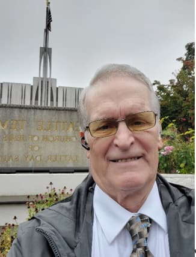

Thomas A Gibb | WDD 130 | My Personal Homepage
This is one of my favorites, standing in front of the Seattle Temple. My name is Tom Gibb, I live with some of our family in Olympia, WA. I grew up in Southern California and have since moved extensively around the world due to employment. I was 80 at the end of September. My 2nd wife and I have 12 children (7 for me and 4 for her and one granddaughter adopted) between us with one deceased. We have 35 grandchildren and five great-grandchildren with one more due in August. I started my employment history on 28 August 1963 when I enlisted in the US Navy. 20 years in the US Navy, (Electronics/Computer/Software/Satellite Communications). 10 years at Martin Marietta Astronautics Group(MMAG) (Satellite Test Engineer/Software Developer/Technical Lead). 19 years with Intel Corporation (Software/Security/IT Admin/Desktop Support Tech). Between the above I had several other small jobs in the Computer and Technology industry. I retired from the Navy in 1983, MMAG in 1993, and Intel on April 25th, 2016. So, I've now been retired for 9 years. In addition, my wife and I are Ordnance Workers at the Seattle Temple every Wednesday 2nd shift, so I am almost always busy doing something.